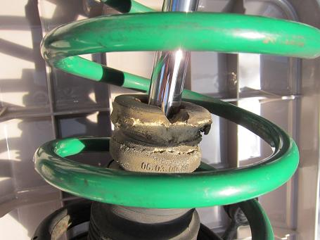
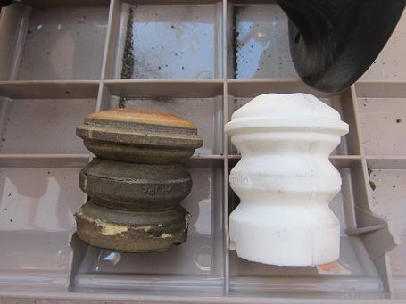
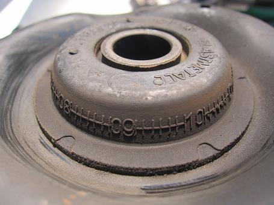
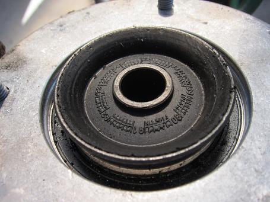
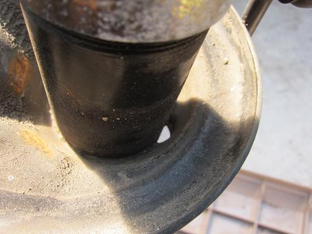
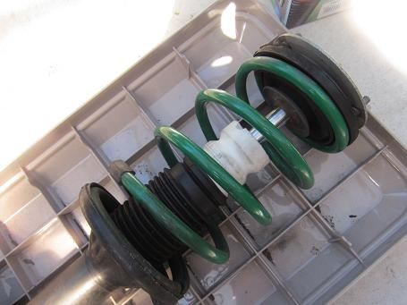

2014/9/21 バンプラバー交換 ～ストラットを外さずに交換できるのか？！～
以前に足回りのメンテをしていると、バンプラバーが劣化しているのを発見した。
見つけてしまった以上は交換しないといけない！ が！ ストラットを外すのは面倒だし・・・
ストラットを外さずにスプリングコンプレッサーをかけて、アブソーバー縮めればバンプラバーだけ交換できるかも？！
なんて考えるも・・・ やってみるとコンプレッサーが車体に干渉してかけることができない（汗
こっちからあ～して・・・ こ～して・・・ う～ん・・・
・
・
・
もういい！ストラットを外そう！（笑

そんなわけで外れたストラット バンプラバーが粉砕されている。
これだけでもハンドルの落ち着きが悪くなる。

車高を下げた車両にはＭテク用のバンプラバーが良いなんて話も聞く。
Ｍゴローは常にしっかりバンプタッチしているほうがハンドリングに落ち着きが出て好みなのだ。18インチを履いてる影響だろうか？
そんなわけで、カットはせずそのまま組み込んでいる。
ちなみに、このバンプラバーはモンローのものだ。純正の半値程度でダストブーツもついてくる。とてもお得だ。


この時に純正品に交換したアッパーマウントだ。
サーキットなどハードな走行もあり、約６万キロを走ったがベアリングのゴリゴリした感じもなければゴムに亀裂もない。
やはり足回りゴム系のパーツは純正品が正解だ。

ストラットを外したら、チェックしておきたいのが下皿にある水抜き用の穴だ。
ここには小石が良く挟まる。 すると水が抜けなくなって錆がでてしまう。
見えにくいが車載状態でもチェックすることができる。 タイヤを外す機会があれば見てみることをオススメする。

組み込んだ図 またこれでしばらくは大丈夫だ。
結果は見ての通り、バンプラバーの交換はストラットを外しましょう（笑